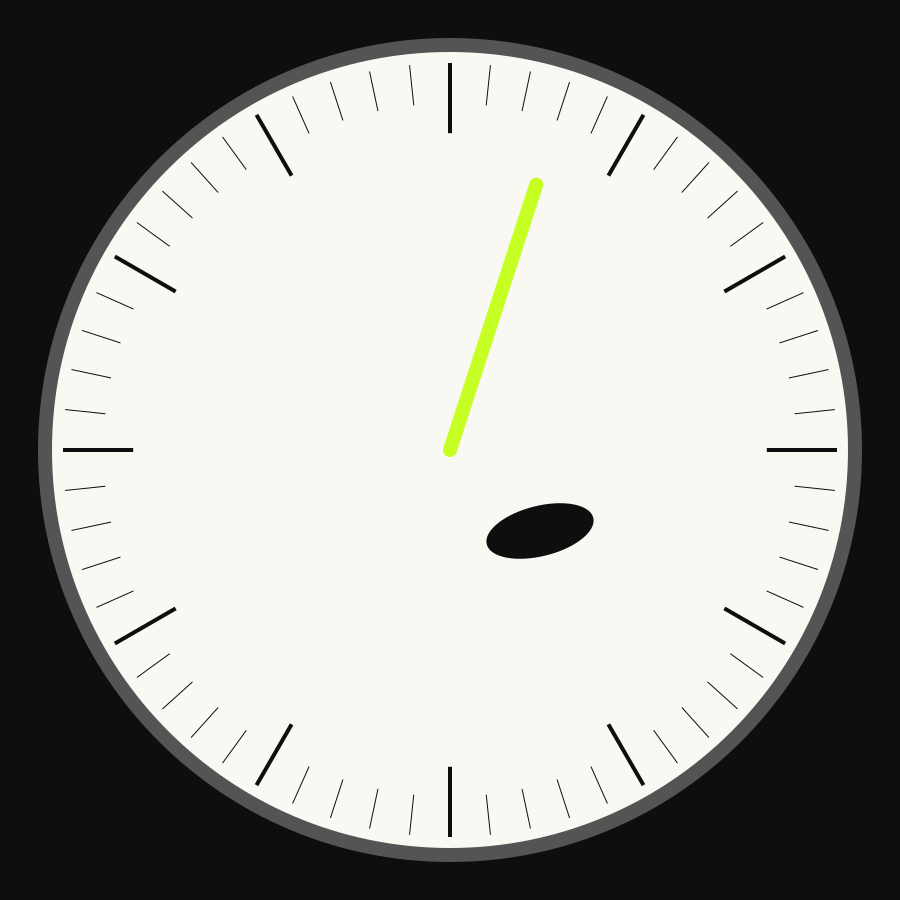

Bizarre Industries / Astronomical Atlas / PROVISIONAL v1 / NONPUBLISHABLE
Components
Existing accessible primitives wrapped in Bizarre states and composition.
This layer wraps existing native interaction infrastructure. The host application owns behavior; Bizarre supplies governed tokens, states, motion, and composition.
Action and status
Physical label
MASS X 0.69 / MASS Y 0.53

Contract families: atlas-panel, bilingual-data-panel, calibration-label, instrument-dial, physical-label, signal-action, status-indicator.